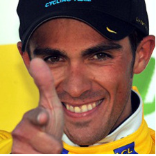
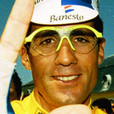

Alberto Contador
Alberto Contador Velasco (Madrid, 6 de diciembre de 1982)1 es un ciclista de ruta español que ha corrido profesionalmente en los equipos ONCE/Liberty Seguros, Discovery Channel, Astana y Tinkoff-Saxo, del que forma parte desde 2011.
En 2007 se convirtió en el ciclista más joven de su país en ganar el Tour de Francia. Además consiguió su primer triunfo del Giro de Italia en el año 2008, y con su victoria en la Vuelta a España en 2008 es el primer corredor español que ha conseguido las tres Grandes Vueltas ciclistas del mundo (Giro de Italia, Tour de Francia y Vuelta a España), hazaña que sólo han conseguido los franceses Jacques Anquetil y Bernard Hinault, los italianos Felice Gimondi y Vincenzo Nibali, y el belga Eddy Merckx.
Miguel Indurain
Miguel Induráin Larraya3 4 (Villava, Navarra, 16 de julio de 19645 ) es un exciclista español, profesional entre 1985 y 1996.
Fue ganador del Tour de Francia durante cinco años consecutivos (de 1991 a 1995) y del Giro de Italia en dos ocasiones consecutivas (1992 y 1993); fue además campeón del mundo contrarreloj (1995), campeón olímpico contrarreloj (1996)6 y poseedor del récord de la hora (1994) durante dos meses.
Marco Pantani

Marco Pantani (Cesena, Italia, 13 de enero de 1970 - Rímini, Italia, 14 de febrero de 2004) fue un ciclista profesional italiano entre los años 1992 y 2003. Ganó un Giro de Italia, un Tour de Francia y también una medalla de bronce en el Mundial de ciclismo de ruta del año 1995.
Apodado "El Pirata", obtuvo sus mejores resultados en pruebas de ciclismo por etapa, y fue hasta 2014 (Vincenzo Nibali) el último italiano en ganar el Tour de Francia (en el 98, 33 años después de Felice Gimondi) y el último ciclista en ganar el Giro de Italia y el Tour de France en el mismo año